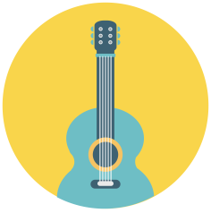

<mat-toolbar color="primary">
  <span>
    <a routerLink="/" class="logo-title"> <span class="page-title">My Songs</span></a>
  </span>
  <span class="spacer"></span>
  <ul>
    <li>
      <button mat-raised-button color="accent" routerLink="/create" routerLinkActive="mat-accent">Add Song</button>
    </li>
  </ul>
</mat-toolbar>
